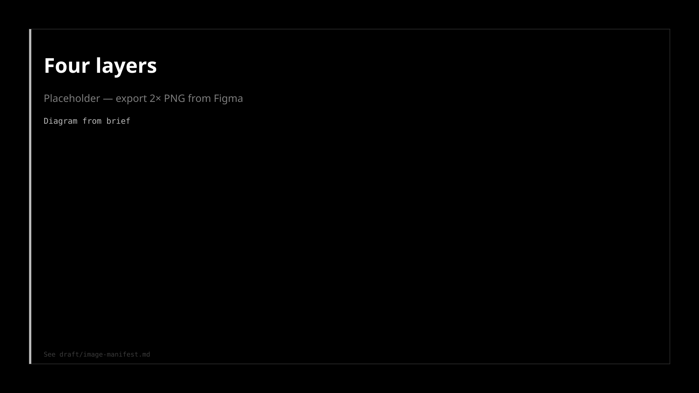
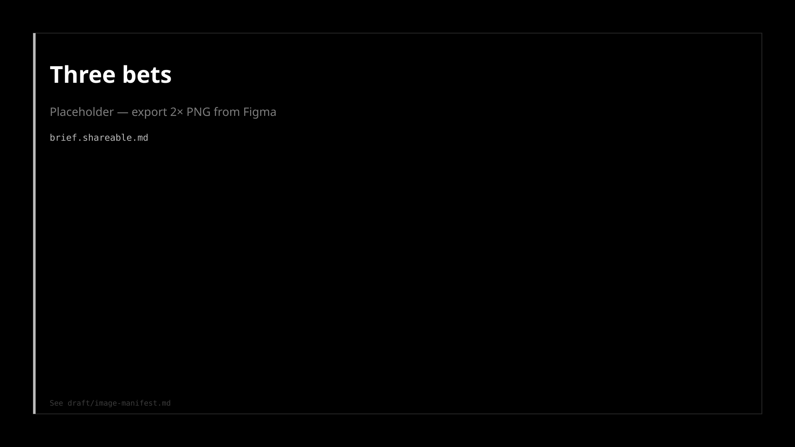
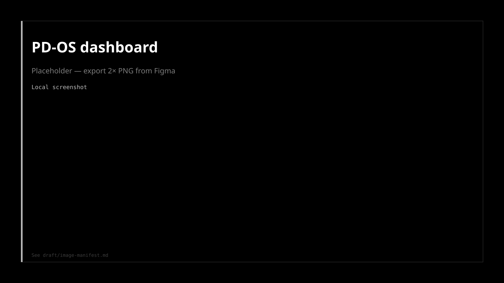

Project Nova
Firefox's 2026 redesign, in Nightly.
Read →
Leadership needs to know design is moving faster with AI: more user-visible fixes and shipped product, not more hours. And they need an org where design, partners, and eng are all AI-native builders — not a handoff queue.
Not 3× Figma files. Same team, more user-visible fixes and shipped product, with proofs attached instead of process overhead.
| Bet | Priority | Proof bar |
|---|---|---|
| QA & close the loop | Now | One visual-gap backlog; gaps closed from single queue; issues caught pre-ship |
| Faster calls | Ongoing | Fast signal changed a decision. Not "we ran a test" |
| Code, not slides | Stretch | Eng-used prototypes linked in sprint/ticket when team ships in code |

| Level | Meaning |
|---|---|
| Blocker | Must fix before wider exposure |
| Fix before exposure | Should fix; don't ship as-is |
| Accept and track | Known gap. Log it and move on |
| Tactical → fast call | Strategic → deep qual | |
|---|---|---|
| What | Reversible UI/flow; answerable in <48h | Big bet; trust/privacy/new-user risk |
| Proof | Signal changed the decision | Documented why fast signal was insufficient |
